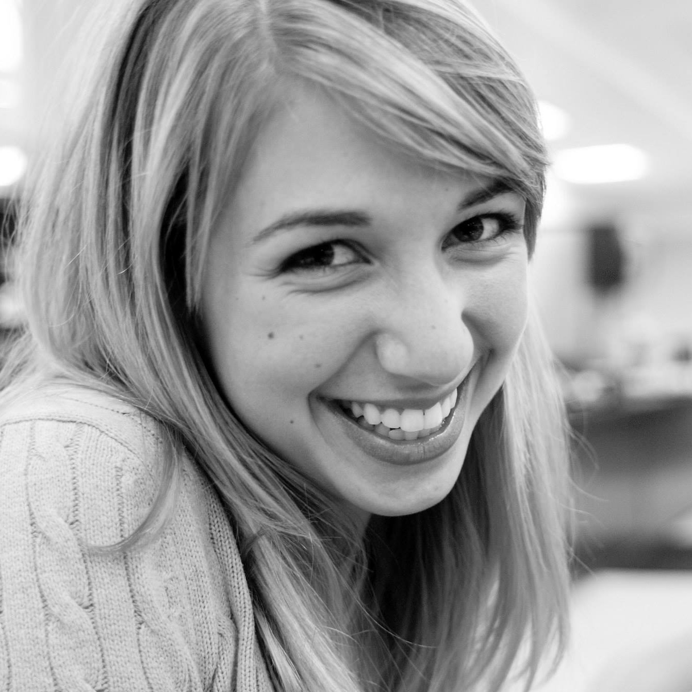
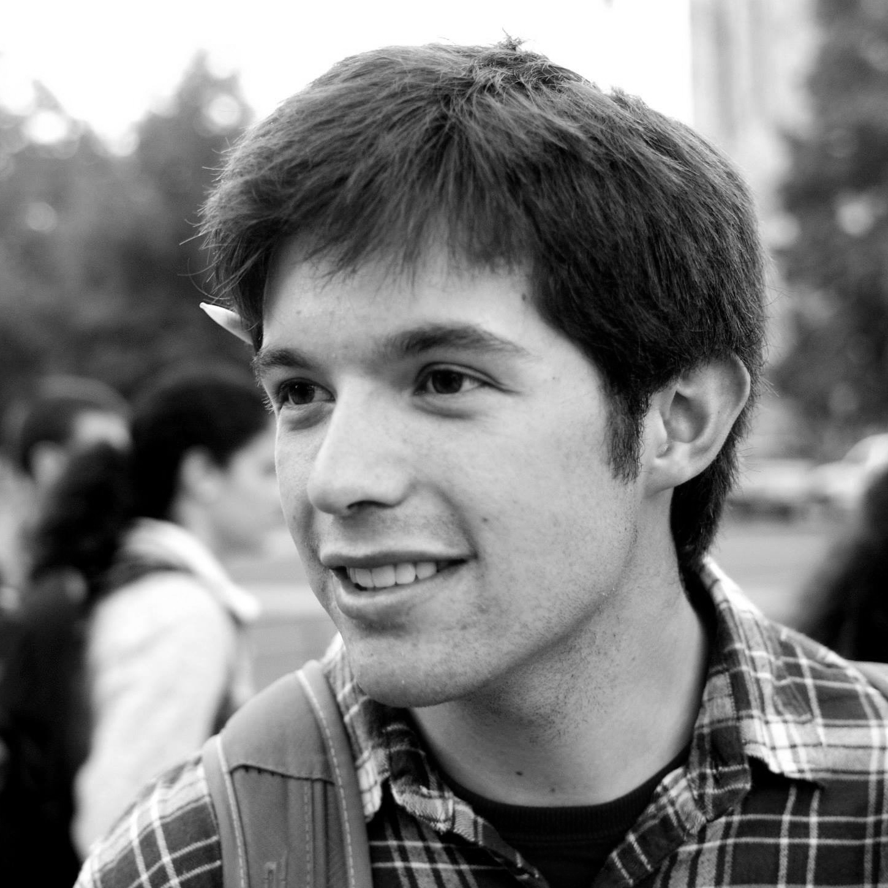
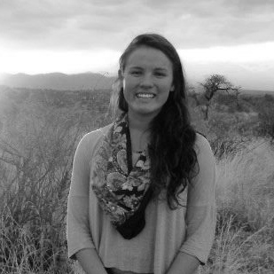
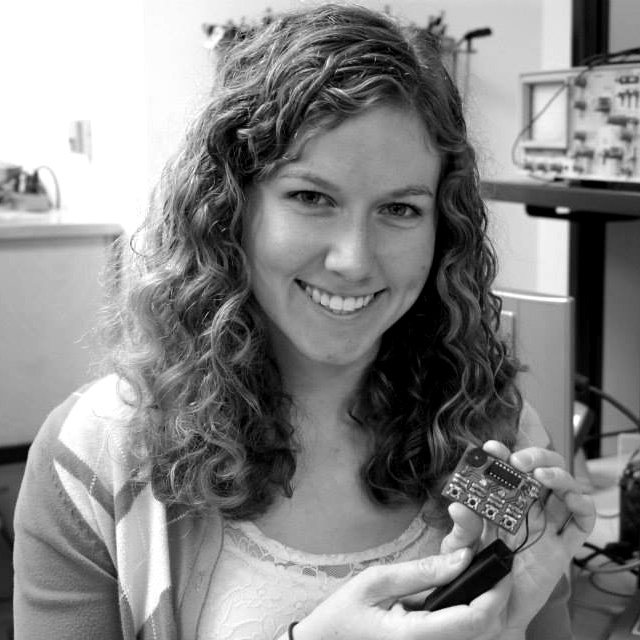
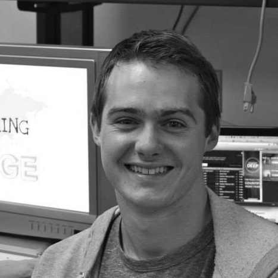
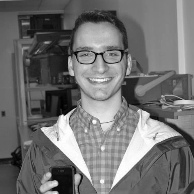
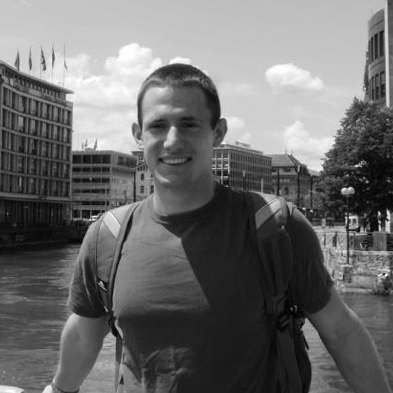
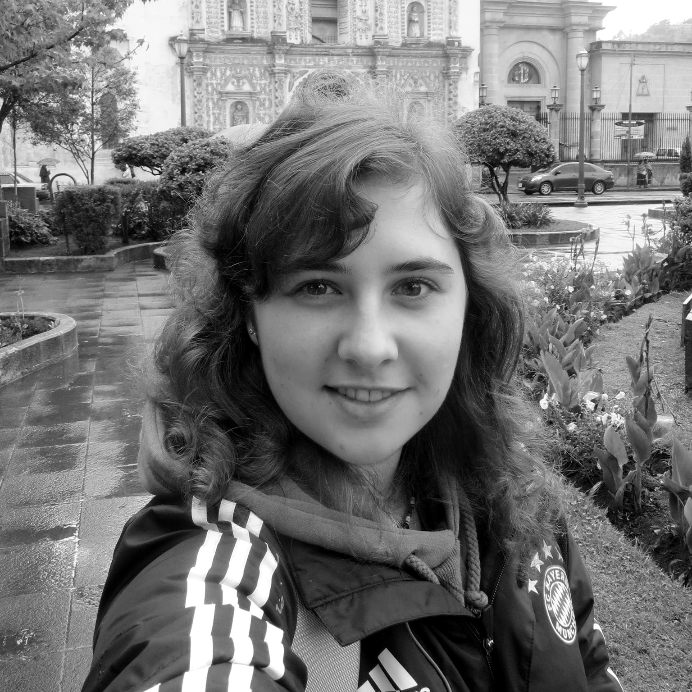
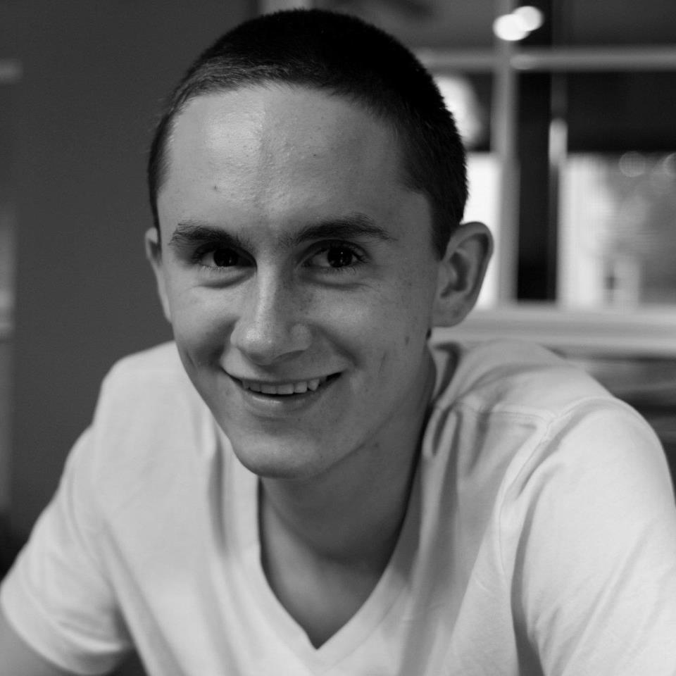

Christine Schindler | President
Christine Schindler is a Duke University aluma from Fairfax, VA, who graduated in 2015 with a degree in Biomedical Engineering and a minor in Global Health. She founded GEC in 2012 in order to decrease the stereotypes that prevent many girls from entering STEM fields. In addition to GEC, Christine is pursuing research in women's global health technologies, specifically breast cancer assessment. In her free time, she enjoys being a part of Duke Catholic Center, Duke Partnership for Service, and spending time with friends. She currently works in Hartford, CT, with Cigna.

Grant Petersen | Chief Operations Officer
Grant Petersen is a senior at Duke from Littleton, Colorado, studying Mechanical Engineering and Public Policy Analysis. As Chief Operations Officer, he deals with internal operations such as logistics for events, finances, and day-to-day support for the team. He is a member of Duke Venture Forwad, a Compass Fellows mentor, and a Duke Chapel Scholar. He loves the outdoors, spicy food, snow, traveling, and dogs. After Duke, he hopes to attend graduate school, and eventually teach at the collegiate level.
Ashley Reid | Chief of Outreach
Ashley Reid is a senior Biomedical Engineering major at Duke from Charlotte, North Carolina. She first became interested in Girls Engineering Change as a high school student visiting Duke, where she met Christine Schindler and was convinced to give engineering a try. Ashley has done research with Duke's iGEM team in synthetic biology, and with the Wax Lab in the Fitzpatrick Institute for Photonics. She is on Duke's Club Running team, is involved in campus religious life, and loves cheering on the Blue Devils as a Cameron Crazie.

Melina Smith | Chief of Regional Outreach
Melina graduated from Duke in 2015 with a major in Biomedical Engineering. Having grown up in the Triangle area, she is very excited about her role as Chief of Regional Outreach. She is a member of the Duke chapter of Engineering World Health and spent the past summer in Tanzania through a DukeEngage program repairing medical equipment in developing-world hospitals. She is involved in the Pratt Academic Action Committee, is the Wellness Advocate for her sorority, Alpha Phi, and is part of the Nutrition Education Task force.

Karmyn McKnight | Chief Programming Officer, ECE
Karmyn McKnight is a Duke 2015 aluma from southern California. Karmyn is double-majoring in Biomedical Engineering and Electrical & Computer Engineering, with a minor in Theater Studies. Outside of GEC, Karmyn is involved in both theater and dance at Duke, and works with gameday operations for Duke basketballas a Line Monitor. After graduation, Karmyn will be working as a New Product Development Engineer at a medical device company in Irvine, California.

Dutch Waanders | Chief Programming Officer, BME
Taylor 'Dutch' Waanders is a Duke 2015 alum majoring in Biomedical Engineering and minoring in Chemistry at Duke from New Haven, CT. Outside of GEC, Dutch dances for Duke Swing Dancing, plays Duke Club Rugby, sits on the Undergraduate Conduct Board, and is the president of Duke's Ubuntu Living Group. As a Pratt Fellow, Dutch is currently doing research on osteoarthritis, particularly with regard to the knee. He is not sure what he wants to do after college but he plans on using his Duke degree to further advance the biomedical engineering field.

Aaron Newman | Chief Programming Officer, CEE
Aaron Newman is a Duke junior studying Electrical and Energy Engineering from Raleigh, NC. He is responsible for the civil and environmental engineering aspect of the GEC curriculum. He looks forward to exploring project ideas that are not electronics based, in order to provide a greater range of lessons. Outside of school, he is an involved member of the entrepreneurial student living group The Cube and HackDuke hackathons. Aaron also enjoys hiking and the outdoors.

David Robertson | Chief Marketing Officer
David Robertson graduated with a Public Policy major at Duke in 2015. Along with Girls Engineering Change, David is involved with the Common Ground program, Duke Community Consulting and the 1-G Network, as well as a writer for the Duke Political Review. After graduating, David wants to go into the business world before going back to graduate school for his MBA and Masters of Urban Planning. David eventually wants to be the mayor of a large city, work for the United Nations, or become the governor of Virginia.

Bianca Bracht | Chief Marketing Officer, Visual Promotional Media
Bianca Bracht is majoring in Biomedical Engineering and minoring in Chinese and Chemistry. She grew up speaking German, Portuguese, and English, and has learned Swahili and Chinese. During her time at Duke, she has become involved in Engineering World Health, and is currently leading a project in the Duke University chapter of EWH. In addition, Bianca has had work experience as an intern at a mechanical engineering company, Bosch Rexroth. In her spare time, she's interested in photography and film.

Chris Dieckhaus | Web Developer
Chris Dieckhaus is a Duke senior from St. Louis, MO. He is majoring in Computer Science and minoring in Chinese. Chris is involved in various roles within the Duke Catholic Center and plays for Duke Club Golf, and loves skiing, hiking, and biking, especially in Colorado.. He is also very into photography, shooting sports for the Duke Chronicle, in addition to a variety of his own personal projects. After graduation, Chris plans on entering the computer science industry.